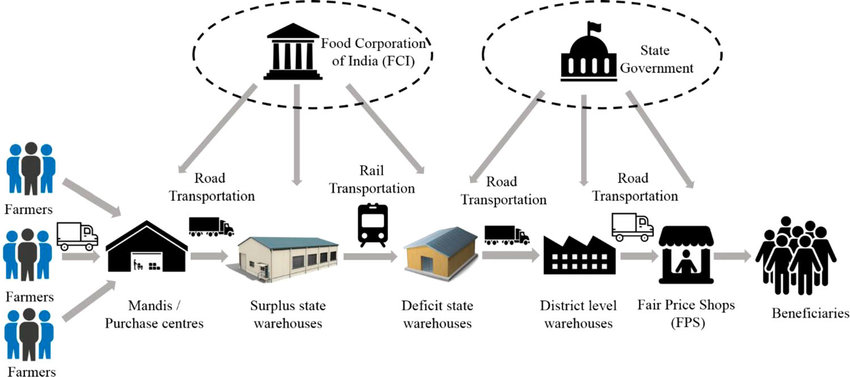
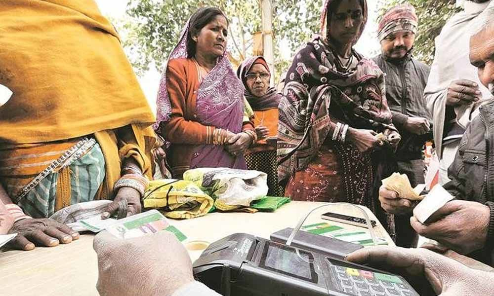

PUBLIC DISTRIBUTION SYSTEM
FEATURES&LIMITATIONS
The quantity of food grains earmarked to meet BPL requirements (including Antyodaya families) is 18.52 million tonnes per annum (at the rate of 25 kg per family per month) benefitting an estimated 65.2 million poor families, while for the population above poverty line (APL) a quantity of 10.33 million tonnes of food grains per annum is earmarked for distribution under TPDS.
Keeping in view the surplus stocks of food-grains, the allocation of food grains has been increased to 35 kg per family per month from April 1, 2002 for households covered under Antyodaya, APL and BPL families for a period of one year.
In order to make TPDS more focused and targeted towards the poor population, the Prime Minister launched the “Antyodaya Anna Yojana (AAY) on December 25, 2000. AAY targets one crore poorest of the poor families out of a total of 6.52 crore BPL families covered under TPDS.
These identified families are currently being provided 35 kg food grains per family per month at a highly subsidized price of Rs 2 per kg for wheat and Rs 3 per kg for rice.
Allocation under TPDS:
Allocations of food grains for BPL and AAY categories are made at the rate 35 kg per family per month for all accepted 6.52 crore families in the country. Total BPL and AAY allocations made during 2009-10 were 276.77 lakh tonnes comprising 185.05 lakh tonnes of rice and 95.72 lakh tonnes of wheat.
Allocations under the APL category are made depending upon the availability of stock, of food grains in the central pool and past off-take. Presently, these allocations range between 10 kg and 35 kg per family per month in different states/UTs. During 2009-10, 197.17 lakh tonnes of food grains has been allocated to states/UTs under the APL Category as against 112 lakh tonnes allocated during 2008-09.

Appraisal of New PDS:
The decision of the centre to introduce the “New PDS” so as to keep the non poor (i.e., the population above the poverty line) off from the purview of the public distribution system was under consideration since the days the Government led by Narasimha Rao.
After all the PDS has been one of the many ways of subsidizing goods and services in the name of “welfare of the people“, i.e., a concept which has already undergone drastic changes in this era of liberalisation and privatisation.
In recent times, welfare state no longer takes over the welfare of the entire people, who are interestingly made to find for themselves. Rather the welfare state should take care of only those people who really cannot fend for, themselves. Thus, the recent decision on the PDS, therefore, is a sensible step the Government has taken under the circumstances
Moreover, the cost running PDS is also increasing progressively. The prelimary assessment of the programme (PDS) by the Independent Evaluation Office (IEO) reveals that to deliver Rs 1 worth of food to people under the PDS, it costs the government Rs 3.65.
The IEO has found that 57 per cent of the subsidized food grains distributed in Delhi, do not reach the target group with close with close to 36 per cent siphoned off the supply chain.
Incidentally, there is little logic for a middle class family and a rich family to wait in queue before a PDS outlet to purchase an item which is readily available at affordable price in the open market. But the below poverty line (BPL) families have to look for the items in the PDS outlet as they cannot afford to purchase those items from the open market.
Under the present circumstances, the Government should make its machinery efficient so that it can cater to the needs of BPL families better than ever before. Under the new PDS, as the target group having been identified and the number of people requiring PDS facility drastically reduced, like Government should now be able to concentrate on how to reach and serve those people living in difficult or inaccessible areas.

The Government should also now try to include certain other items which are as much essential as rice, kerosene and wheat, in the PDS list so as to fulfil the objective of welfare state along with putting the economy on competitive path.
By targeting the PDS, the Government will now’ be able to save a good volume of resources which they can now utilise to meet the minimum needs of the poorer sections of the society. Thus, it can be expected that the new PDS would be a harbinger of a new movement for attaining a better living in the backward areas.